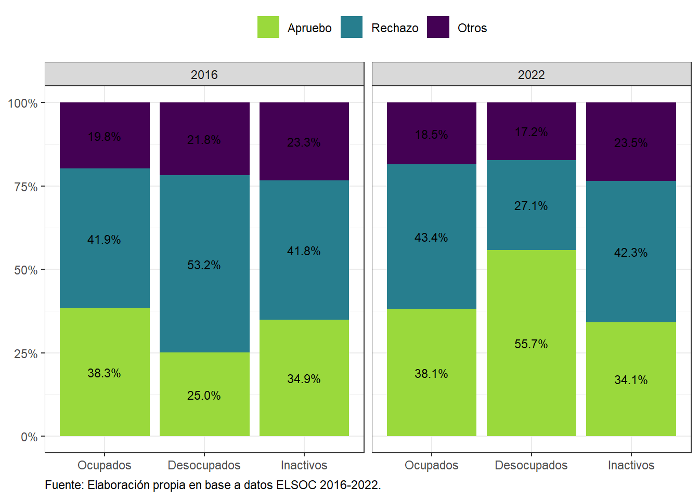

Capítulo 3 Seguridad Económica y Laboral
elsoc_long_2016_2022 %>%
filter(tipo_atricion == 1, !is.na(m02)) %>%
mutate(sit_laboral = factor(car::recode(m02, "1:3 = 1; 6 = 2; c(4,5,7,8,9) = 3"),
levels = 1:3)) %>%
sjlabelled::as_label(ola) %>%
prop_list(sit_laboral==1, sit_laboral==2, sit_laboral==3, by = ola, na.rm = TRUE) %>%
mutate(name = factor(name,
levels = c('sit_laboral == 1', 'sit_laboral == 2', 'sit_laboral == 3'),
labels = c('Ocupados',
'Desocupados',
'Inactivos'))) %>%
ggplot(aes(y = prop, x = ola, group = name, color = name,
label = scales::percent(prop, accuracy = .1))) +
theme_bw() +
geom_point(size = 1.75) +
geom_line() +
geom_text_repel(nudge_y = .025, size = 3, color = 'black') +
scale_y_continuous(labels = scales::percent, limits = c(0,1)) +
ylab(label = NULL) +
xlab(label = NULL) +
scale_color_viridis_d(end = .75, option = 'viridis') +
theme(plot.caption = element_text(hjust = 0),
legend.position = 'top',
legend.title = element_blank()) +
ggtitle(NULL, 'Situación Laboral por Ola') +
labs(caption = 'Fuente: Elaboración propia en base a datos ELSOC 2016-2022.')
Figura 3.1: Situación Laboral, evolución histórica
# elsoc::load_elsoc('long')
elsoc_long_2016_2022 %>%
mutate(ola = ifelse(ola==1,"2016",
ifelse(ola==6,"2022",ola))) %>%
filter(ola==2016|ola==2022,muestra==1,!is.na(salida),!is.na(sit_laboral)) %>%
prop(salida, by = c(ola,sit_laboral), na.rm = TRUE) %>%
sjlabelled::as_label(salida, sit_laboral) %>%
ggplot(aes(y = prop, x = sit_laboral, fill = fct_rev(salida),
label = scales::percent(prop, accuracy = .1))) +
theme_bw() +
geom_col(position = 'Stack') +
scale_y_continuous(labels = scales::percent) +
ylab(label = NULL) +
xlab(label = NULL) +
scale_fill_viridis_d(begin = 0, end = .85, option = 'viridis') +
geom_text(position = position_stack(vjust = .5),
size = 3) +
theme(plot.caption = element_text(hjust = 0),
legend.position = 'top',
legend.title = element_blank()) +
guides(fill = guide_legend(reverse = TRUE)) +
facet_grid(~ola) +
labs(caption = 'Fuente: Elaboración propia en base a datos ELSOC 2016-2022.')

Figura 3.2: Situación Laboral, según voto en plebiscito